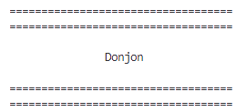
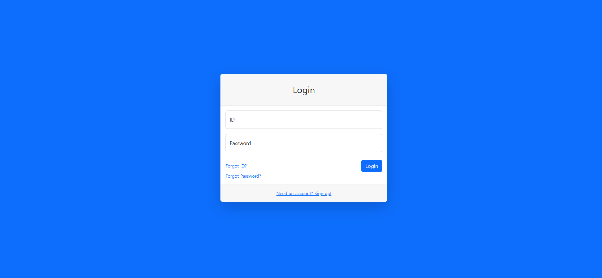
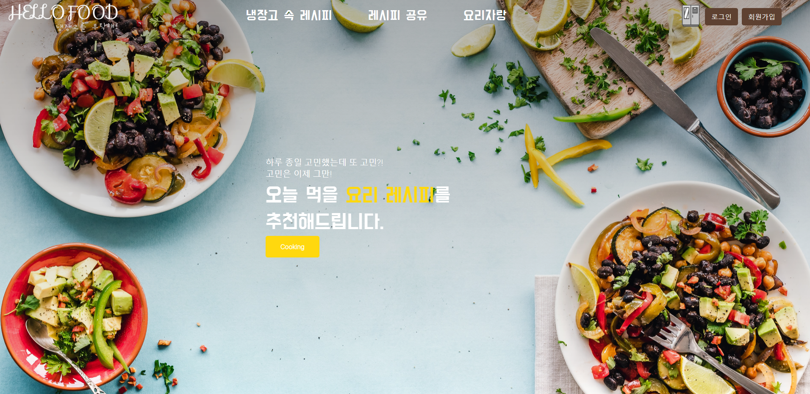

PROJECTS
Donjon
2023.02 - 2023.03
(personal project)

이 프로그램은 간단하게 즐길 수 있게 만든 게임입니다.
rpg를 생각하면 보통 오랜시간이 걸린다고 생각합니다. 하지만 이 게임은 rpg가 가지고 있는 성장 시스템을 가짐과 동시에 빠르게 즐길수 있도록 개발하였습니다.
이 프로그램은 저희 첫 자바를 이용한 프로그램입니다.
여러 가지의 코드들을 이용하여 하나의 프로그램으로 만드는 것이 얼마나 재밌는지를 알려주는 시간이 되었습니다.
또한 데이터를 저장시켜 정보를 업데이트 시키는 거나 정보를 가져오는 것이 얼마나 편리한 것인지를 알게 체험한거 할 수 있었습니다.
또한 사냥을 하는 것 외에
게임을 시작할 시 종족을 고르게 하여 다양한 능력치를 선택할 수 있게 하여 다양성을 주었고
사냥을 통해 레벨이 올라가면서 그전에는 사용할 수 없던 스킬들을 사용할 수 있게 있게 하여 성장의 재미를 주었습니다.
또한 중간 중간 등장하는 던전으로 인한 다양한 상황들을 주어 반복하는 느낌을 주지않게 하려고 하였습니다.
이 프로그램을 만든 경험은 저에게 즐거움과 배움의 기회를 제공했고, 이를 통해 자바라는 언어에 대한 이해도가 증가할 수 있었습니다.
앞으로 더 많은 프로젝트에 참여하고 싶다는 마음이 듭니다.
주요 기능
사냥터 등장 시 몬스터 등장,레벨 업, 던전을 통한 아이템 획득, 아이템 사용, 도망,클리어, 저장, 불러오기
GitHub
Backend
Java
Team-communicate-Tool
2023.04 ~ 2023.05
(Team Project)

다른 사람들과 같이 프로젝트를 진행하는 동안 원활한 의사소통 및 효율적인 협업을 위한 웹 페이지입니다.
다른 사람들과 일을 할때 어떤 역활을 해야하는 지, 얼마나 진행되었는지를 아는 것이 중요하다고 생각한 것이 개발하게 된 계기가 된 것 같습니다.
팀 프로젝트를 진행하면서 협업을 하는 것 이 얼마나 중요한 것인지를 많이 배울 수 있었습니다.
또한 처음 작성하는 Use Case 명세서,요구사항 분석,Use Case Diagram,Class Diagram,ERD Diagram 작성 그리고 어떤 UI를 만들지 에 대하여 정하고 가는 것이
프로젝트를 진행할 때 중요하는 것을 알게 되었습니다.
클라이언트의 요청을 처리하고 그 결과를 반환하는 서버의 컴포넌트인
Java Servlet 을 통해 동적안 웹페이지를 구성하였습니다.
또한 Model, View, Controller 즉MVC2 패턴을 이용하여,
웹 어플리케이션의 구조가 명확해지게 하였고, 유지보수 및 확장성이 용이해지는 장점을 경험하여
웹 개발에 대한 이해도를 증가하는데 큰 도움이 된 프로젝트 경험이었습니다.
주요 기능
회원가입, 로그인,프로젝트 생성,프로젝트 팀원 등록, 업무 분담, 업무 완료, 프로필 관리, 초대
Frontend
JSP, CSS3, JavaScript
Backend
Java
Framework
eclipse
Design Pattern / Architecture
Servlet, MVC2 Pattern
Database
Oracle
Version Control
GitHub
Refrigerator
2023.05 ~ 2023.07
(Team Project)

냉장고에 재료를 등록하여 관리 및 재료를 이용한 레시피 추천 웹 페이지입니다.
전 세계적으로 매년 수십억 톤의 음식이 낭비되고 있는데 그 중 상당 부분 중 하나가 깜빡하여 오랫동안 방치하거나
요리할 방법을 몰라 버려지는 재료들 이라는 것을 보고 개발하게 되었습니다.
spring을 이용하여 개발하는 것이 처음이라 생각보다 오랜 시간이 걸리게 되었고 또한 중간 중간 예상치 못한 일들이 일어나는 상황이 생겨
처음 계획 했던 목표를 달성할 수 없게 되어 특정 기능을 제외한 나머지 부분을 모두 완성하였습니다.
DB에 직접 값을 넣어야 했던 방식 말고 JPA를 이용하여 entity를 table 생성 및 서로 간의 연결을 시켜주는 것이 얼마나 편리한 것인지를 알게 되었고
repository에서 Query문을 이용하여 쉽게 값을 가져오거나 JPAQueryFactory를 통해 특정 구조로 값을 가져오는 기능들이 사용하면서 db에 접근하는 여러가지 방법에 대해 배우게 된 것 같습니다.
특정 값을 정해주어야 했던 저번 프로젝트 와는 달리 Controller에서 url및 경로에 대한 처리를 하다보니 수정 및 보완 하는 부분이 편해졌다는 것을 느꼈습니다.
또한 해당 기능 부분들에 대하여 따로 따로 표시하다 보니 프로젝트의 구조가 더욱 명확하게 보인다는 것을 알게 되었습니다.
주요 기능
재료 등록,랜덤 레시피 생성,재료 관리 및 삭제, 재료가 포함된 레시피 표출,블로그 검색, 유튜브 검색, 레시피 등록 및 수정,요리자랑 등록 및 수정, 요리완료 시 재료 삭제,
즐겨찾는 레시피, 프로필 관리, 신고 관리,신고
Frontend
jpa, CSS3, JavaScript
Backend
Java
Framework
Spring boot
Design Pattern / Architecture
MVC Pattern
Database
MYSQL
Version Control
Git, GitHub